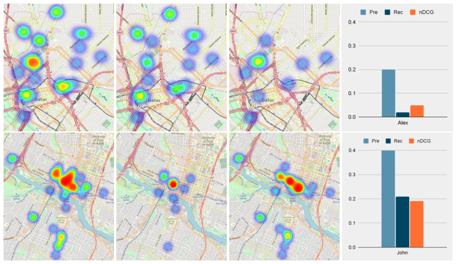
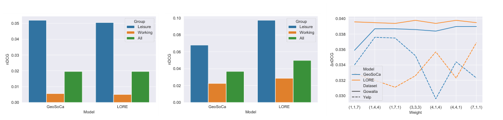

Exploring the Impact of Temporal Bias in Point-of-Interest Recommendation (探究兴趣点推荐中的时间偏差影响)
- 会议/期刊: RecSys 2022（Short Paper, 9 页）
- 作者与机构: Hossein A. Rahmani (UCL)、Mohammadmehdi Naghiaei (USC)、Ali Tourani (Univ. of Luxembourg)、Yashar Deldjoo (Polytechnic Univ. of Bari)
- 推荐链路定位: 精排 / 排序打分（上下文感知 POI 打分函数）
- 研究方向: 去偏公平与可信推荐 / 时空轨迹与 POI 推荐
- 论文原文: https://arxiv.org/abs/2207.11609v1
- 开源代码: https://github.com/rahmanidashti/ContextsFair
TL;DR (1分钟核心速览)
本文指出 POI 推荐中一个被忽视的域内公平维度——时间偏差：用户的签到时段（8:00–18:00 工作时段 vs. 其余休闲时段）分布高度不均，而主流上下文感知模型（GeoSoCa、LORE）对此系统性偏向。作者按休闲签到比例把用户切为前后 20% 两组，在 Gowalla/Yelp 上以逐用户 7:2:1 时间切分 + 全库未交互排序评测，发现休闲组 nDCG@10 达 0.0679，工作组仅 0.0226（ΔnDCG=0.0453，约 3 倍质量差）；改用和式或加权和融合可将 ΔnDCG 相对降低 14.8%–42.6%。
Background & Motivation (背景与核心矛盾)
- 主流范式: POI 推荐普遍把地理、社交、类别、时序等上下文因子以乘积规则融合成单一打分 \(F^G_{up}\cdot F^S_{up}\cdot F^C_{up}\)（GeoSoCa）或\(F^K_{up}\cdot F^U_{up}\cdot F^T_{up}\)（LORE），并以整体 nDCG/Pre/Rec 作为唯一验收标准。
- 前人局限: ①现有公平性研究几乎只用人口属性（性别、年龄）或交互量（活跃度、流行度）划分群体，属于“通用公平”，无法刻画 POI 场景特有的时空行为差异；②乘积融合对任一因子接近 0 的样本产生“连乘塌缩”，使时序偏好弱的群体被打分压制，而整体指标掩盖了该差异。
- 核心洞察 (Key Insight): 签到时刻分布严重右偏（集中于午后与傍晚）；用户画像越大，工作时段签到比例越高、休闲时段比例越低（负相关），说明时序偏好并非噪声而是稳定的用户属性。图 1 给出强动机：Alex 与 John 签到量（891 vs. 938）几乎相同，但前者集中于工作时段，二者获得的推荐质量截然相反。
- 本文切入点: 不做新模型，而是构造时间敏感的用户分组 + 组间 ΔnDCG 公平度量，并把融合算子本身当作可调的去偏杠杆（积 → 和/加权和）。

Method (核心方法设计)
1. 整体框架 (Overall Architecture)
本文是一篇诊断式（diagnostic）研究：先从原始签到日志中抽取小时戳，按 \([8{:}00,18{:}00)\) 划为工作时段、其余为休闲时段；再以每用户休闲签到占比排序，取头部 20% 为 leisure-focused、尾部 20% 为 working-focused（Gowalla 各 1,125 人，两组签到量 273,610 vs. 246,373、平均流行度 0.552 vs. 0.535、活跃度 242.99 vs. 218.80，属性几乎同分布，仅时序行为不同，从而排除“活跃度混杂”解释）。随后在两组上分别跑 GeoSoCa/LORE 的打分排序，计算组内 nDCG 与组间差，最后通过替换融合算子（积/和/加权和）扫描“精度—公平”权衡曲线。
flowchart TD
A["签到日志 (user, POI, 小时戳)"] --> B["时段分桶: 工作 8-18 时 / 休闲"]
B --> C["用户分组: 休闲占比 Top20% vs. Bottom20%"]
C --> D["上下文打分: GeoSoCa / LORE (地理+社交+类别/时序)"]
D --> E["融合算子: 积 ∏ / 和 + / 加权和"]
E --> F["组内 nDCG_L, nDCG_W → ΔnDCG 与 Acc./Unf."]2. 关键设计拆解 (Key Designs)
-
域内时间公平度量（ΔnDCG）：痛点是整体 nDCG 无法暴露组间落差。定义为 \(\Delta\text{nDCG}=\text{nDCG}_{L}-\text{nDCG}_{W}\)（\(L\)休闲组、\(W\)工作组），并配一个“性价比”指标\(\text{Acc./Unf.}=\text{nDCG}_{\text{all}}/\Delta\text{nDCG}\)。其直觉是：单看 ΔnDCG 会奖励“把所有人一起做差”的模型，除以整体精度后才能真正区分“既准又均”的方案。
-
多项式回归上下文融合（把融合算子参数化）：痛点在于乘积规则是硬约束的极端特例，不可调。作者将三种上下文 \(c_1,c_2,c_3\) 统一写成 \(\text{POIRec}(u,p)=\lambda_1c_1+\lambda_2c_2+\lambda_3c_3+\lambda_{12}c_1c_2+\lambda_{13}c_1c_3+\lambda_{23}c_2c_3+\lambda_{123}c_1c_2c_3\)其中积规则对应\(\lambda_{123}=1\)、其余\(\lambda=0\)；和规则对应\(\lambda_1=\lambda_2=\lambda_3=1\)、其余为 0；加权和则学习\(\lambda\) 以同时优化精度与公平。物理直觉：加法把弱因子“抬起来”，避免乘积对稀疏/弱时序偏好用户的二次惩罚。
-
训练目标、负采样与推理开销：本文无训练损失、无负采样（GeoSoCa/LORE 为基于概率/相似度的非参数打分器），推理为对全库未交互 POI 逐一打分排序，开销与候选数线性相关；加权和版本仅额外引入 3 个全局标量，在线成本可忽略。
Experimental Setup & Evaluation Protocol (实验设置与评估协议)
- 数据集与预处理: Gowalla 剔除签到 < 15 的冷用户与访问 < 10 的 POI；Yelp 剔除访问 < 10 的用户与 POI。
| 数据集 | #Users | #Items(POI) | #Interactions | 稀疏度/密度 | 特征/场景说明 |
|---|---|---|---|---|---|
| Gowalla | 5,628 | 31,803 | 620,683 (378,968 unique) | 0.0034 | 含 46,001 社交边，无类别 |
| Yelp | 7,135 | 16,621 | 1,137,521 (285,608 unique) | 0.0095 | 46,778 社交边，595 类别，10 个都市圈 |
- 数据划分与防穿越 (Splitting Strategy): 逐用户时序切分——最早 70% 签到作训练、最近 20% 作测试、中间 10% 作验证，杜绝未来信息泄漏；两组的划分独立进行，保证组内评测不共享正样本。
- 排名评测协议 (Ranking Protocol): Full-Ranking（对全部未交互 POI 打分排序，无负采样）；指标 Pre@N、Rec@N、nDCG@N，\(N\in\{10,20\}\)，公平指标 ΔnDCG 与 Acc./Unf.。
- 对比基线与超参设置: 2 个高引用上下文感知 SOTA——GeoSoCa（地理+社交+类别）与 LORE（地理+社交+时序），各配 3 种融合规则（\(\prod\)、\(+\)、加权和），加权和采用全局共享权重\(\lambda\)，在\((1,1,7)\to(7,1,1)\) 网格上扫描；未报告显著性检验。
Key Experimental Results (实验关键数据)
1. 主实验对比 (Main Results)
Gowalla / Yelp，nDCG@10（\(L\)休闲组、\(W\) 工作组），粗体为同模型内 ΔnDCG 最优：
| 数据集 | 模型 | 融合 | nDCG@10 | nDCG\(_L\) | nDCG\(_W\) | ΔnDCG↓ | %Δ | Acc./Unf.↑ |
|---|---|---|---|---|---|---|---|---|
| Gowalla | GeoSoCa | \(\prod\) | 0.0368 | 0.0679 | 0.0226 | 0.0453 | — | 0.8123 |
| Gowalla | GeoSoCa | \(+\) | 0.0354 | 0.0610 | 0.0224 | 0.0386 | 14.79 | 0.9170 |
| Gowalla | GeoSoCa | 加权和 | 0.0339 | 0.0579 | 0.0220 | 0.0359 | 20.75 | 0.9442 |
| Gowalla | LORE | \(\prod\) | 0.0498 | 0.0973 | 0.0287 | 0.0686 | — | 0.7259 |
| Gowalla | LORE | \(+\) | 0.0363 | 0.0624 | 0.0226 | 0.0398 | 41.98 | 0.9120 |
| Gowalla | LORE | 加权和 | 0.0373 | 0.0632 | 0.0238 | 0.0394 | 42.56 | 0.9467 |
| Yelp | GeoSoCa | \(\prod\) | 0.0196 | 0.0519 | 0.0056 | 0.0463 | — | 0.4233 |
| Yelp | GeoSoCa | \(+\) | 0.0173 | 0.0422 | 0.0070 | 0.0352 | 23.97 | 0.4914 |
| Yelp | GeoSoCa | 加权和 | 0.0157 | 0.0367 | 0.0071 | 0.0296 | 36.06 | 0.5304 |
| Yelp | LORE | \(\prod\) | 0.0196 | 0.0505 | 0.0051 | 0.0454 | — | 0.4317 |
| Yelp | LORE | \(+\) | 0.0169 | 0.0395 | 0.0069 | 0.0326 | 28.19 | 0.5184 |
| Yelp | LORE | 加权和 | 0.0159 | 0.0377 | 0.0066 | 0.0311 | 31.49 | 0.5112 |

2. 消融实验 (Ablation Study)
以“融合算子”作为唯一变量（其它上下文因子与打分流程不变），量化公平增益与精度代价（nDCG@10）：
| 移除/替换 | 数据集 | 精度 \(\Delta\)(nDCG) | 公平\(\Delta\)(ΔnDCG) | 净效果 (Acc./Unf.) |
|---|---|---|---|---|
| \(\prod\to+\)(GeoSoCa) | Gowalla | \(-\)3.8% | \(-\)14.8% | 0.8123 → 0.9170 |
| \(\prod\to+\)(LORE) | Gowalla | \(-\)27.1% | \(-\)42.0% | 0.7259 → 0.9120 |
| \(\prod\to\)加权和 (GeoSoCa) | Yelp | \(-\)19.9% | \(-\)36.1% | 0.4233 → 0.5304 |
| \(\prod\to\)加权和 (LORE) | Yelp | \(-\)18.9% | \(-\)31.5% | 0.4317 → 0.5112 |
| w/o 权重扫描 (固定 \(\lambda{=}1\)) | 两数据集 | — | 波动显著 | Yelp 波动幅度 > Gowalla |
3. 关键实验发现 (Key Findings)
- 时间不公平是结构性的，不是活跃度混杂：两组签到量（273,610 vs. 246,373）与流行度消费（0.552 vs. 0.535）几乎等价，但 GeoSoCa/LORE 在 Gowalla 上给休闲组 0.0679、工作组仅 0.0226，约 3 倍落差；Yelp 上更极端（0.0519 vs. 0.0056，接近 9 倍），说明该偏差源于时序偏好本身而非样本量。
- 乘积融合是偏差放大器，和式融合是“廉价去偏”：仅把 \(\prod\)换成\(+\)，LORE 在 Gowalla 上 ΔnDCG 从 0.0686 降到 0.0398（−42%），代价是整体 nDCG 掉 27%；而 GeoSoCa 只付 3.8% 精度就换来 14.8% 公平增益，Acc./Unf. 从 0.8123 升到 0.9170——说明“精度—公平”权衡强烈依赖模型本身对上下文因子的敏感度。
- 融合权重是可行的公平旋钮，但最优权重不可跨数据集迁移：在 \((1,1,7)\to(7,1,1)\) 扫描中，权重可显著改变 ΔnDCG，Yelp 的响应幅度远大于 Gowalla，且最优值随数据集漂移，提示全局权重需按数据集/业务重标定（作者将用户级局部权重留作未来工作）。
Highlights & Limitations (亮点、对比与审稿批判)
- 与代表作对比 (vs. Prior Work): 相较 Rahmani 等对签到时空模式的行为学分析，本文把“模式差异”推进到“推荐质量差异”并给出可复现度量；相较通用组公平工作（按性别/年龄/活跃度分组），本文提出域内（in-domain）时间公平，且证明分组属性与活跃度解耦；相较 GeoSoCa/LORE 原文只报整体精度，本文首次揭示其连乘融合的组间惩罚效应。
- 可迁移亮点: ①“属性近似同分布、仅目标行为不同”的受控分组法可迁移到任意推荐场景的公平诊断（如长短会话、昼夜活跃）；②把融合算子写成多项式回归并做 \(\lambda\) 网格扫描，是一种零训练成本的“后处理式”去偏手段，可直接用于已有的多因子打分系统。
- 审稿级局限批判: ①仅 2 个非深度学习打分器、2 个数据集，未覆盖神经 POI 模型（如 STAN、HG-Rec）与更细的时段粒度，且未报告显著性检验，ΔnDCG 的稳定性存疑；②“休闲组更优”的因果归因未做交叉验证（如按活跃度分层后再比较），且加权和权重为全局标量、缺乏用户级个性化，精度代价（LORE 掉 27%）在工业场景中难以接受。
Rating (四维评分)
- 方法创新性 (Novelty): ⭐⭐⭐ （以时段划分域内公平组并提出 ΔnDCG/Acc.-Unf. 双指标与融合算子参数化视角，问题定义新颖但技术增量偏诊断性）
- 评估协议与实验扎实度 (Protocol & Experiments): ⭐⭐ （逐用户 7:2:1 时序切分与 Full-Ranking 规范，但仅 2 模型 2 数据集、无显著性检验、无长尾/稀疏分桶分析）
- 写作与数学规范度 (Clarity & Rigor): ⭐⭐⭐ （多项式融合定义清晰、动机图有说服力，但正文数值与表 3 的组别标注存在错位，公式推导近乎为零）
- 工业落地与复现价值 (Industrial & Practical Value): ⭐⭐⭐ （代码开源、去偏仅需替换融合算子与 3 个标量，落地成本极低；但精度代价与权重不可迁移限制了直接上线）